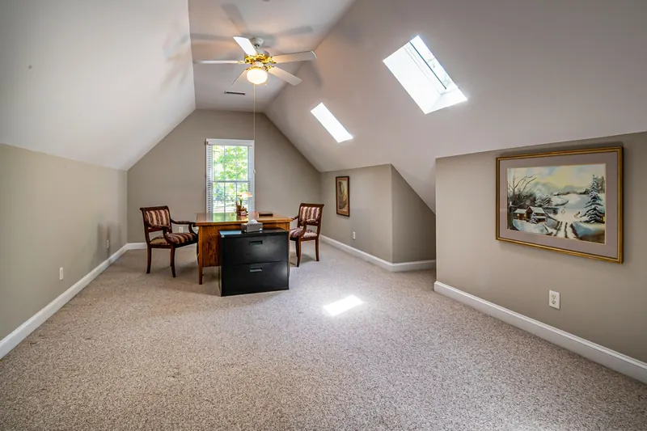

Quick Answers
Why is the room over my garage so hot?
Because it touches unconditioned space on almost every side. Knee walls and sloped ceilings back up to attic, the floor sits over an unheated garage, and the supply duct often has the longest run in the house. Energy auditors writing about these rooms point to air leaks and sagging floor batts before undersized cooling.
What R-value does the floor over a garage need?
Tennessee's amended energy code sets R-19 as the prescriptive floor minimum in Climate Zone 4, and ENERGY STAR recommends R-19 for floors here too. The insulation only delivers that when it touches the subfloor above and the joist bays are air sealed at the rim.
Do you insulate garage doors?
No. Garage doors belong to a door installer, and we leave them alone. We insulate garage walls and ceilings, including any wall shared with the house, and air seal the gaps between the garage and living space. If the garage will be heated, an insulated door from a door company finishes the job.
Signs the Room or Garage Needs Work
- The bonus room runs hotter than the rest of the upstairs in summer and colder in winter.
- The floor is cold underfoot, especially the part over the garage.
- You smell car exhaust or gasoline in the room above or elsewhere in the house.
- A window unit or portable air conditioner was added just for that room.
- Knee wall access doors feel drafty.
- You want to heat or cool the garage for a shop or home gym.
How It Works
A bonus room has more surface touching unconditioned space than almost any other room. Each surface gets its own fix, and every one gets air sealed, because DOE notes that insulation slows heat flow but does not stop air movement.

Knee walls
Behind each short wall is attic. We insulate the knee wall with foam, or with batts held tight and covered on the attic side by an air barrier, and close any floor joist bays that run open from the attic under the room. DOE lists the joints between attic and living space among the key places to seal.
Or the roof deck behind them
The other route is foaming the roof deck behind the knee walls, which brings those attic pockets inside. Pick one approach and do it completely. For an unvented space in Zone 4A, code calls for at least R-15 of air impermeable insulation against the sheathing, about 2 to 2.5 inches of closed cell.
Sloped ceilings
The slope between knee wall and flat ceiling is a shallow rafter bay. Where we can reach it, closed cell at R-6 to R-7.4 per inch packs the most insulation into that depth.
The floor over the garage
Closed cell sprayed up against the subfloor seals and insulates at once, and reaching R-19 takes roughly 2.5 to 3.25 inches. An R-19 fiberglass batt is about 6.5 inches thick on one manufacturer's chart and has to be held tight to the subfloor. When the garage ceiling is finished, injection foam can fill the closed joist bays through small holes.
Garage walls and ceiling
Open garage walls take batts or foam, and the wall shared with the house gets air sealed first. Exposed foam in a garage generally needs half inch drywall or another approved covering, since the ignition barrier exceptions are written for attics and crawl spaces.
Keep the fire separation intact
The drywall between your garage and the house is a fire separation, not just a finish. If the garage ceiling has to be opened to reach the floor bays, it must be closed back up to the same standard, seams and penetrations included, and your local inspector has the final word on that standard.
Garage and Bonus Room Insulation Cost
Cost depends on which surfaces need work, how we reach them, and the product. On small areas, access and drywall work can outweigh the insulation itself. Below are national ranges from cost guides checked in October 2026. They are not our prices.
| What it covers | Range | Guide |
|---|---|---|
| Open cell foam (any job) | $1.50 to $3.50 per sq ft | HomeGuide, 2026 |
| Closed cell foam (any job) | $3.00 to $5.00 per sq ft | HomeGuide, 2026 |
| Fiberglass batts and rolls | $0.30 to $1.50 per sq ft | Fixr, January 2026 |
| Drywall removal to reach cavities | $293 to $875 | HomeAdvisor, June 2024 |
For a ballpark, a 24 by 24 foot garage ceiling under a bonus room is 576 square feet. Closed cell at $3.00 to $5.00 per square foot comes to roughly $1,730 to $2,880 before any drywall work. Knee walls and the roof deck behind them are priced by their own area.
The Knoxville cost guide and spray foam cost calculator cover other jobs. Call (865) 564-7823 for a free estimate on your room and garage.
The East Tennessee Angle
A room with this much exposed surface feels both of Knoxville's seasons. The normal July high is 88.4 F with about 1,574 cooling degree days a year, and the normal January low is 30.0 F with about 3,528 heating degree days. The attic behind the knee walls bakes in summer, and the garage below goes cold in winter.
Code depends on the address. The City of Knoxville enforces the 2024 IRC with the 2018 IECC, which in Tennessee carries the R-19 floor and R-38 ceiling table, while Maryville moved to the 2024 IECC on January 1, 2026. We check with the local office before any work that needs a permit.
What the Free Estimate Includes
We go into the knee wall attics, look at the floor framing from the garage, follow the duct run to the room, and check the garage ceiling drywall. The written price lists each surface, the product and thickness, and any drywall work, so you can choose what to tackle first.
Garage and Bonus Room FAQ
Related Services
- Attic insulation: the rest of the attic, from a deeper floor layer to a sealed roof deck.
- Injection foam: fills closed garage ceilings and finished walls through small holes.
- Air sealing: top plates, penetrations and the shared garage wall, sealed before insulation.
Where We Do This Most
- Farragut: a median build year of 1992, with 88.3 percent of homes single-family detached.
- West Knoxville: in 37932, around Hardin Valley, 38.5 percent of homes went up in 2010 or later.
- Karns: about 44 percent of homes in 37931 date to 2000 or later, including new subdivisions like Karns Landing.
- Powell: the 2000s were the biggest building decade in 37849, at 26.0 percent of homes.
- Lenoir City: about 23.5 percent of homes were built in 2010 or later.
Tell us which room is uncomfortable and when, then call (865) 564-7823 or use the form to book a free estimate with a written price.